비에 젖은 흔적들이다 같은 웹툰 추천

비에 젖은 흔적들이다 · 무류
비에 젖은 흔적들이다 재밌게 봤다면 이 웹툰들도 좋아할 거예요. 같은 장르이면서 시대물, 설렘폭발 같은 요소가 겹치는 작품을, 겹치는 요소가 많은 순서로 20개 골랐어요.
2026-10-05 기준 · 네이버웹툰·카카오웹툰·레진코믹스 · 성인 작품 제외
내 취향으로 직접 골라 추천받기 →-
1
 카카오웹툰
카카오웹툰타람 타람 타람
나긋나긋한 움직임으로 들어온 다온이 연회장 중앙에서 멈춰 섰다. 인형만큼이나 무미하고 감정 없는 얼굴이었다. 그럼에도 도도하고 우아해서 얼음 여왕처럼 강렬한 인상을 주었다. 엑서는 다리를 꼬며 낮게 웃었다. “지배자로서, 오늘 밤 널 안겠다.” 운명…
시대물설렘폭발무협로맨스카카오웹툰에서 보기 → -
2
 카카오웹툰
카카오웹툰나는 한 편의 극을 보았다
'심장은 여전히 그를 사랑한다고 말했지만, 머리는 그 사랑을 거부했다. 그것은 꽤나 묘한 기분이었다. 나지만 내가 아닌 느낌이었다.' 햇빛을 받아 금발처럼 보이는 금갈색 머리카락이 허리까지 내려와 굽실거렸다. 거울 안에는 반짝이는 짙은 녹색 눈동자를…
시대물무협로맨스카카오웹툰에서 보기 → -
3
 카카오웹툰
카카오웹툰처음이라 몰랐던 것들
위대한 시계 장인들의 딸이며 영웅, 빅토르 함장의 아내인 스칼렛 덤펠트. 그녀는 경찰청에서 취조를 받던 중, 빅토르의 왕실 복귀를 반대하는 자들에 의해 기억을 잃게 된다. "나가실 때쯤에는, 여기서 있었던 일을 기억하지 못하실 겁니다.” 사라진 일주…
시대물무협로맨스카카오웹툰에서 보기 → -
4
 카카오웹툰
카카오웹툰공작가의 흑막 영애님
공작가의 사생아로 태어나 제국의 성녀가 된 에스텔레. 일평생 주변 이들을 사랑하려 노력했으나, 배신당해 악마에게 제물로 바쳐져 지옥에서 600년간 고통을 받았다. [복수할래?] [네가 원한다면, 저들이 가장 찬란히 빛나는 순간으로 보내줄게. 어때?]…
시대물무협로맨스카카오웹툰에서 보기 → -
5
 네이버웹툰
네이버웹툰논 투아
황제, 그리고 수천의 신을 섬기던 1세기의 로마 제국. 그 중 화로의 여신 베스타(Vesta)를 섬기는 신녀들이 있다. 처녀신 베스타를 따라 그 자신도 사내와 통정하지 말아야 하며, 이를 어길 시 지하에 파묻혀 죽게 되리라.
시대물무협로맨스네이버웹툰에서 보기 → -
6
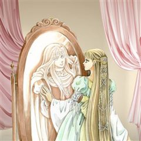
카카오웹툰프린세스
3대에 걸친 대서사시. 라미라,아나토리아,스가르드 3국의 이야기. 1년 내내 온화한 기후와 풍족한 자원을 가졌지만 약소국이기에, 언제나 정치적으로 중립을 지켜야 하는 라미라. 라미라의 왕자인 비욘, 그가 사랑하고 있는 상대인 유모의 딸 비이, 그리고…
시대물무협로맨스카카오웹툰에서 보기 → -
7
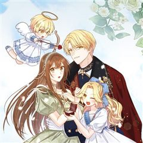
카카오웹툰나의 새언니가 되어주세요!
“그래서 말인데, 혹시 우리 오빠 어떠세요?” 이름 없는 자작가의 구박덩어리 클레어의 인생에 어느 날 갑자기 불쑥 사랑스러운 황녀가 나타났다! 유리 황녀는 일면식조차 없는 클레어에게 뜬금없이 제국 최고의 신랑감이라고 불리는 제 오라버니와의 결혼을 제…
시대물무협로맨스카카오웹툰에서 보기 → -
8
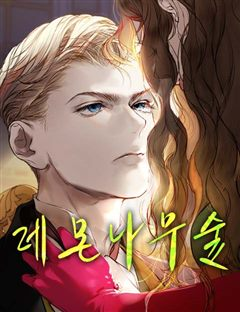
네이버웹툰레몬나무숲
[막이 오른다.] [기쁜 일이 있는 듯 환하게 웃는 한 사람이 무대로 뛰어오른다.] [눈을 맞추며] '사랑해.' '당신이 이 세상에서 가장 비참해졌으면 좋겠어.'
시대물무협로맨스네이버웹툰에서 보기 → -
9
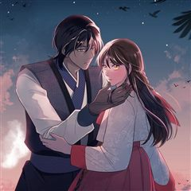
카카오웹툰교룡의 주인
심장에 여의주를 품은 왕이 용과 함께 다스리는 곳, 예락. 그리고 세자에게 자신의 심장을 바쳐야 하는 왕족, ‘마니’. 이번 대의 ‘마니’ 유리서란은 맹약식 날 자신의 교룡에게 세 번의 명령만 내리고 자유를 주겠다는 약속을 한다. 그럼에도 다들 그녀…
시대물무협로맨스카카오웹툰에서 보기 → -
10
 카카오웹툰
카카오웹툰흑막은 매일 밤 나를 찾아온다
수도 엘바크에는 한옥풍으로 건축된 13층짜리 호텔이 있다. 나는 호텔 미드나잇 블루의 마스터 루비. ……그리고 흑막공에게 살해당하는 여관 주인1. ‘그게 나일지도 몰라!’ 이곳은 <기어라, 그리고 내 열망을 삼켜라>, 그런 제목을 가진 BL 웹소설의…
시대물무협로맨스카카오웹툰에서 보기 → -
11
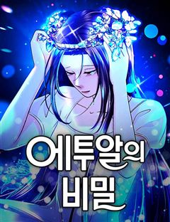
네이버웹툰에투알의 비밀
파리 국립 오페라 발레단의 젊은 무용수 조이. 미래에 대한 불안으로 가득하던 어느 날, 그녀는 우연히 발견한 신비로운 티아라를 통해 과거로 시간 여행을 떠나게 된다. 파리 오페라의 전설적인 에투알, '세실리아'의 몸으로 깨어난 그녀. 과연 조이는 시…
시대물무협로맨스네이버웹툰에서 보기 → -
12
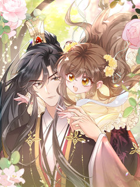
레진코믹스폭군 아빠가 내 생각대로 움직여요 [연재]
복권 당첨 직후, 추락자에게 깔려 사망?! 억울함에 염라대왕 멱살까지 잡고 난리 친 끝에, 책 속 황실 세계로 환생하게 됐는데… 하필이면 냉궁에 갇힌 '18황자' 포지션? 이게 뭐야, 나는 여잔데?! 숨겨야 할 정체, 곧 망할 나라, 그런데... 황…
시대물무협로맨스레진코믹스에서 보기 → -
13
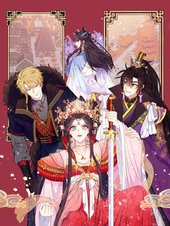
레진코믹스황후궁 체대생 [연재]
[짝수 월 첫째 주 정기휴재] [미남밝힘증 체대생, 황후가 되어버리다!] 바람둥이, 미남밝힘증, 희롱과 솔직 사이에 아슬하게 걸친 노골적 말투까지. 체대생 장학생 신해설은 가부장적 관점에서 본다면 뒷목을 잡고 넘어가기 딱 좋은, 그런 여자다. 그런데…
시대물무협로맨스레진코믹스에서 보기 → -
14
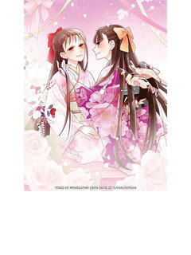
레진코믹스텐도 가 이야기
텐도 가의 마사토에게 시집온 백작가의 아가씨, 호죠 란은 가짜였다. '살아서 나갈 수 없다' 라는 텐도 가의 소문을 듣고 겁에 질린 란. 그녀의 대역을 자처한 소녀는 '남을 구하다 죽고 싶어' 라고 말한다.
시대물무협로맨스레진코믹스에서 보기 → -
15레진코믹스
연지곤지 [개정판][연재]
정사(正史)가 쉬쉬한 정사(情事) 대비는 병든 임금을 대신해 방계 세자 이곤을 허수아비로 세워 한동 김씨 천하를 꾀하고, 보잘것없는 집안의 연지와 정략혼으로 곤을 억제하려 한다. 그러나 방치됐던 부부는 뜻밖의 사건으로 초야를 치르고 서로에 대한 애정…
시대물무협로맨스레진코믹스에서 보기 → -
16
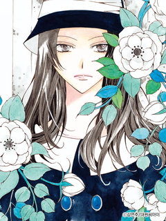
레진코믹스회랑식 중정 [연재]
김연주 작가의 신작 대공개!! 재색겸비의 야망가 세희 아가씨와 그녀의 아름다운 종, 윤의 이야기가 여러분을 찾아갑니다! 경성 최고의 부잣집, 권씨 집안에서 상속권을 둘러싼 경쟁과 음모가 움직이기 시작한다. 재색겸비의 도도한 아가씨 권세희는 외모만큼이…
시대물무협로맨스레진코믹스에서 보기 → -
17
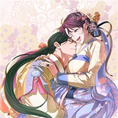
카카오웹툰범하고 싶어
오랑캐와의 국혼을 준비하라는 교지를 받은 은우는 착잡한 마음을 다스리지 못하고 홀로 산책을 나섰다가 앞발을 다친 커다란 범을 만나게 된다. “날 잡아먹어.” 치료해 준 대가로 잡아먹어달라는 요구를 받은 호족의 왕, 백휘는 황당함을 금치 못하지만 은우…
설렘폭발무협로맨스카카오웹툰에서 보기 → -
18
 카카오웹툰
카카오웹툰화산파 막내제자가 되었다
언제 어디서 읽은 소설 안에 빙의될지 모르는 대 빙의 시대에 병렬독서는 위험하다. “장문인, 사문 앞에 웬 갓난아기가!” 뽀짝 육아물 로판과 피가 튀기고 의와 협을 부르짖는 무협 소설을 같이 읽은 대가로 무협 육아물이라는 별 혼종에 빙의할 수 있으니…
설렘폭발무협로맨스카카오웹툰에서 보기 → -
19
 카카오웹툰
카카오웹툰천마신교 최강하녀
평범한 회사원이었던 ‘나’는 어느 날 무협 소설 속 하녀, 신설하로 눈을 뜬다. 홀몸으로 자신을 키워준 할머니를 위해 마교성 하녀로 들어가 5년의 계약 기간을 버텨낸다. 그리고 시간이 흘러, 이제 단 두 달이면 마교를 떠날 수 있었는데— 하필이면 잔…
설렘폭발무협로맨스카카오웹툰에서 보기 → -
20
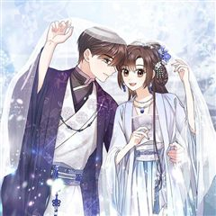
카카오웹툰무협지 남주의 어린 아내가 되어 버렸다
남주가 다 해먹는 무협지 속, 남주의 먼 조상님으로 빙의했다. 남주를 든든히 뒷받침해 주는 역할에 충실하기 위해 뼈가 으스러져라 일해서 최고의 가문을 세웠다. 그 후, 마음 편히 눈을 감았었는데. “뭐? 내 가문이 망했다고?!” 다시 눈을 떠 보니…
설렘폭발무협로맨스카카오웹툰에서 보기 →